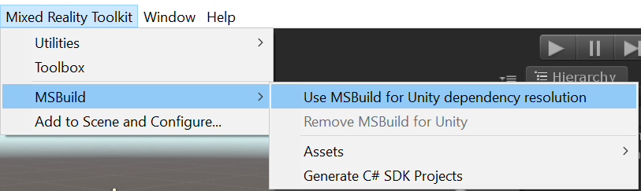
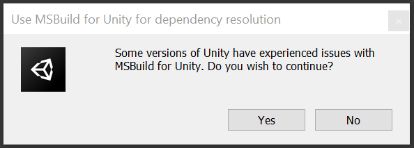

Microsoft Mixed Reality Toolkit 2.5.0 发布说明
新东西
TestUtilities 包
现在有一个包(Microsoft.MixedReality.Toolkit.Unity.TestUtilities.2.5.0.unitypackage)包含 MRTK用于创建端到端测试的PlayMode和TestMode测试基础设施。这个基础设施对于MRTK团队本身来说，这是非常方便的，我们很高兴有用户使用它来增加测试覆盖到他们自己的项目。
下面的代码显示了如何创建一个测试手，在某个位置显示它，移动它，然后捏紧和打开。
TestHand leftHand = new TestHand(Handedness.Left);
yield return leftHand.Show(new Vector3(-0.1f, -0.1f, 0.5f));
yield return leftHand.SetGesture(ArticulatedHandPose.GestureId.Pinch);
yield return leftHand.Move(new Vector3(0.2f, 0.2f, 0));
yield return leftHand.SetGesture(ArticulatedHandPose.GestureId.Open);
有关如何使用这些TestUtilities编写测试的说明，请参阅此部分 编写测试
有关使用此基础设施的现有测试示例，请参见MRTK的PlayModeTests
启用从配置对话框中删除的 MSBuild for Unity
为了防止当Enable MSBuild for Unity未选中时MRTK配置对话框重复显示，它已经被移动到 'Mixed Reality Toolkit' 菜单中，如下图所示。

这个变化还增加了为Unity移除MSBulid的功能。
当选择Use MSBuild for Unity dependency resolution时，会显示一个确认对话框。

重要改动
Rest / Device Portal API
UseSSL静态属性已经从Rest移动到DevicePortal。
如果你以前这样做过...
Rest.UseSSL = true
现在这样做...
DevicePortal.UseSSL = true